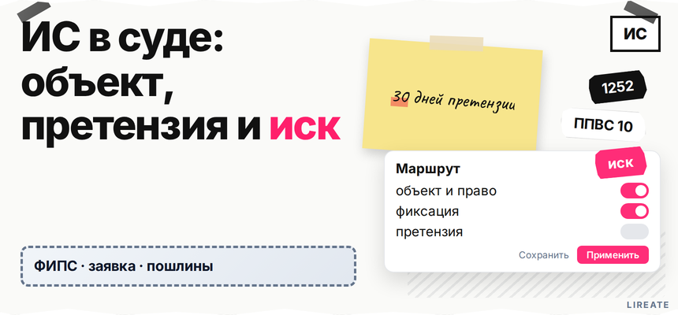
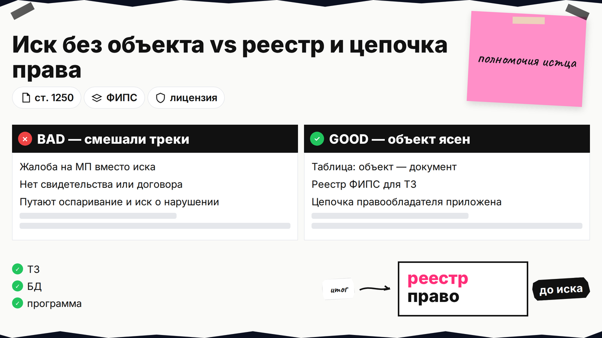
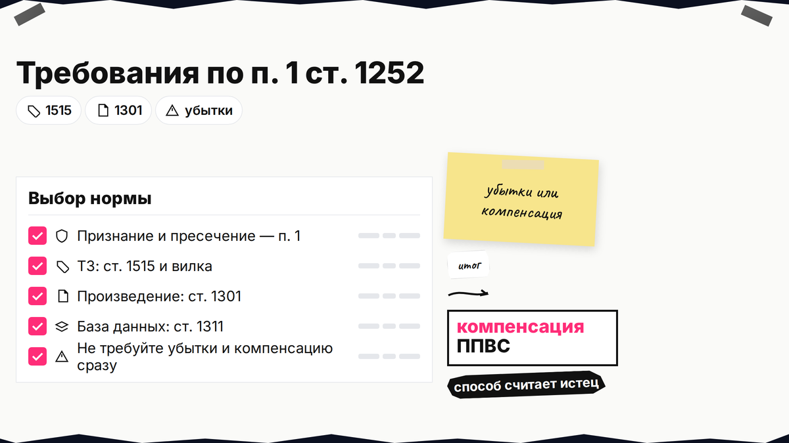
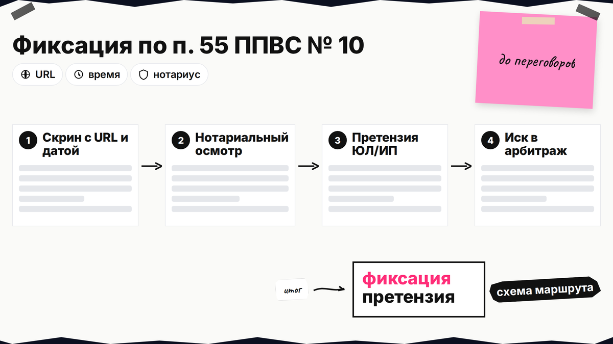

Конкурент копирует логотип, текст или базу клиентов, а вы не уверены: Роспатент, маркетплейс или суд. Жалоба площадке не заменяет иск о компенсации. Без объекта права и требований п. 1 ст. 1252 ГК РФ иск вернут, претензию назовут размытой, скриншоты оспорят. Ниже соберете маршрут правообладателя: объект, способ защиты, фиксация по ПП ВС № 10, претензия, иск по АПК РФ. 19.11.2026; не индивидуальная юридическая консультация.

TL;DR / Быстрый инсайт: Судебная защита = объект и правообладатель → требования п. 1 ст. 1252 → фиксация по п. 55 ПП ВС № 10 от 23.04.2019 → претензия при денежном иске ЮЛ/ИП (30 дней, п. 5.1 ст. 1252) → иск в арбитраж. Компенсация: ст. 1515 (ТЗ), ст. 1301 (произведение), ст. 1311 (БД), общее - ст. 1252.1 с 04.01.2026. Убытки и компенсацию за одно нарушение вместе не взыскивают (ППВС № 10, п. 59).
Гайд для правообладателя (ИП, ООО, автор), который видит нарушение. Оспаривание в Роспатенте и ответ на чужую претензию - другие треки. Узкие сценарии: ТЗ на маркетплейсе, клон сайта, программа, база данных.

Выпишите объект: товарный знак, произведение, программа, база данных, патент. Способы защиты учитывают существо права (ст. 1250, п. 1). Вина нарушителя предполагается (п. 3). В предпринимательских спорах убытки или компенсация по подп. 3 п. 1 ст. 1252 возможны без вины, если нет непреодолимой силы.
Истец - правообладатель или лицо с правом судебной защиты по договору. Приложите свидетельство, договор, лицензию, цепочку перехода прав. Для ТЗ проверьте охрану в Поисковой платформе. Нет свидетельства - проверка перед регистрацией; спор о чужом знаке - похожая регистрация конкурента.
Делайте: таблицу "объект - документ - дата". Не делайте: иск без доказательства полномочий.

По п. 1 ст. 1252: признание нарушения; пресечение; убытки или компенсация; изъятие контрафакта; публикация решения. Одно использование одним способом - одно нарушение (п. 1.1).
| Объект | Компенсация | Вилка с 04.01.2026 | Претензия за деньги |
|---|---|---|---|
| Товарный знак | ст. 1515 | 10 000 - 10 000 000 ₽ | да |
| Произведение | ст. 1301 | 10 000 - 10 000 000 ₽ | да |
| База данных | ст. 1311 | 10 000 - 10 000 000 ₽ | да |
| Иное | ст. 1252.1 | соразмерность | при денежном иске |
Для пресечения и изъятия претензия по п. 5.1 не обязательна. Способ расчета компенсации выбирает правообладатель (ППВС № 10, п. 59). Не делайте: требовать убытки и компенсацию сразу.

Доказывание: использование без договора с вами. Скриншоты с URL и временем, заверенные стороной, допустимы (ППВС № 10, п. 55). При риске удаления - нотариальный осмотр. Несколько действий в одной цели могут быть одним нарушением (п. 56).
Ориентиры практики: дело № А56-49696/2020 - знак только в ключевых словах мог не быть нарушением; № А40-58038/2024 (9 ААС, 25.02.2025) - отказ в компенсации; № А40-64050/2019 - упоминание ТЗ в фильме не использование знака; № С01-488/2023 - извлечение существенной части БД. Номера даны как примеры, не гарантия.
Делайте: фиксацию до переговоров. Не делайте: один скрин без адресной строки.
Между ЮЛ и ИП при иске о деньгах - претензия; иск через 30 дней без ответа или после отказа (п. 5.1 ст. 1252). Основание и размер должны быть ясны (дело № А81-6638/2018). Сохраните отправку.
Иск по АПК: укажите цену иска, приложите документы о праве и доказательства, направьте копию ответчику с подтверждением. Чек-лист приложений: свидетельство или договор; таблица нарушений; скриншоты или нотариальный протокол; претензия и ответ; расчет компенсации одним способом; квитанция госпошлины.
Компенсация за нарушение - чаще арбитраж по месту ответчика; оспаривание решений Роспатента - Суд по интеллектуальным правам (ППВС № 10, п. 11). Неверный суд ведет к возврату иска и потере времени.
Схема: реестр и право → фиксация (URL + время) → претензия при деньгах → 30 дней → иск → исполнение → мониторинг повторов
Не делайте: иск о компенсации в день отправки претензии.
Давность - 3 года с момента, когда узнали или должны были узнать о нарушении (ст. 196, 200 ГК). Возврат иска из-за пошлины или процессуальных ошибок может не прервать срок - уточняйте по вашим датам с юристом.
Госпошлина: неимущественный иск организации - 50 000 ₽, физлица - 15 000 ₽ (п. 1 пп. 4 ст. 333.21 НК РФ); к имущественному требованию добавляется шкала по цене иска. При нескольких связанных требованиях пошлина может считаться по каждому. Заложите нотариат, почту, представителя; ответчик вправе оспаривать размер компенсации.
Делайте: календарь "фиксация - претензия - день 30 - иск - три года давности". Не делайте: обещать руководству фиксированную сумму из верхней границы вилки.
Ранний иск о деньгах без претензии или до истечения 30 дней. Убытки и компенсация за одно нарушение. Неверная подсудность (СИП не для любого спора о компенсации). Слабые скриншоты без URL и времени. Смешение треков: жалоба маркетплейсу не заменяет иск; оспаривание в Роспатенте - не иск о нарушении.
Делайте: перед подачей сверить чек-лист с приставленным к иску перечнем. Не делайте: путать позицию истца и ответчика после получения чужой претензии.
Нужен разбор вашего пакета - обсудить документы и действия по спору на услугах Лирейт, в блоге, новостях, контактах или через регистрацию ТЗ.
Материал проверен: редакция Лирейт, практика споров об ИС.
Достоверность данных: ст. 1250, 1252, 1252.1, 1301, 1311, 1515 ГК РФ, АПК РФ, ППВС № 10 от 23.04.2019, ст. 333.21 НК РФ на 19.11.2026.
Определите объект и статус правообладателя, выберите требования по п. 1 ст. 1252 и спецнорму компенсации, зафиксируйте нарушение по п. 55 ППВС № 10, направьте претензию при денежном иске между ЮЛ и ИП, выдержите 30 дней, подайте иск в арбитраж с пошлиной и полным приложением доказательств.
Сначала досудебный порядок для денежных требований ЮЛ/ИП, затем иск по АПК с ценой иска и копией ответчику; подсудность - арбитраж или СИП по категории.
Фиксируйте факты, проверьте документы о праве, претензия при цели взыскать деньги, жалоба на площадку при МП, не пропускайте трехлетнюю давность.
По п. 5.1 ст. 1252 для пресечения претензия не обязательна, но письмо с требованием часто ускоряет удаление.
Нет, за одно нарушение - один денежный способ (ППВС № 10, п. 59).
Скриншоты с URL и временем, нотариальный протокол осмотра, контрольная закупка контрафакта с чеком.
Ориентир: 50 000 ₽ за неимущественное требование организации плюс пошлина по цене иска и сопутствующие расходы.